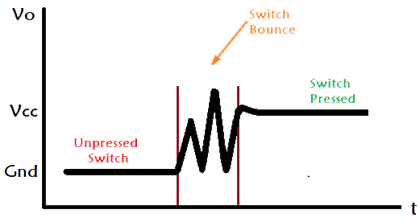
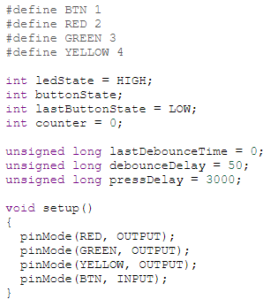
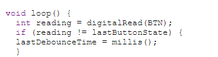
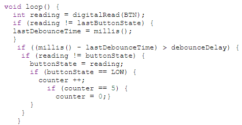
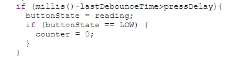
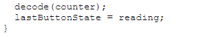
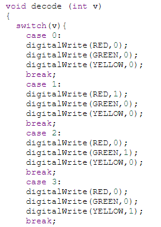

Arduino
In here i will be talking about how i used Arduino to give life to my projexts from using switches to turn LEDs on, to programming a clock.
What is Arduino?
Arduino is an open-source electronics platform based on easy-to-use hardware and software. Arduino boards are able to read inputs - light on a sensor, a finger on a button, or a Twitter message - and turn it into an output - activating a motor, turning on an LED, publishing something online. You can tell your board what to do by sending a set of instructions to the microcontroller on the board. To do so you use the Arduino programming language (based on Wiring), and the Arduino Software (IDE), based on Processing.
Assignments
7 segment countdown timer
Task : Write a program that counts from 0 to 9 continuously.
Simulation :
Explanation :
Before I even touched the arduino board, I needed to know the truth table for the numbers I was going to display, as each segment of the number was assigned to a letter on the 7-segment display. For example, looking at the number 7, the letters that represented the segments "a, b and c needed to be actuated."


I then assigned each segment to the numbers on the arduino board, and set the numbers as outputs.

The last step was to output the respective numbers, with each segment, flashing for a second before turning off and flashing the next number.


1 Switch, Many States
Task : Write a program that enables a push button to switch between 5 states for a group of 3 LEDs.
The system can then be turned off when the button is held down for 3 seconds.
Simulation :
Before i even started on writing my programme, i noticed a problem with the push button switch. When a switch is toggled, contacts have to physically move from one position to another. As the components of the switch settle into their new position, they mechanically bounce, causing the underlying circuit to be opened and closed several times, producing multiple inputs.

The function millis() would be used mulitple times in this assignment, hence it is important to know
what it does. millis() returns the number of milliseconds passed since the Arduino board began running
the current program.
I first assigned the different LEDs and switch to the different pins on the arduino board.The variables
needed for the programme was also declared. lastDebounceTime, debounceDelay and pressdelay are
unsigned longs because the time, measured in milliseconds, will quickly become a bigger number
that can be stored in an int.

Next is the debouncing loop, the "int reading = digitalRead(buttonPin)" will read the state of the switch into a local variable, while the time millis() is taken and stored as the lastDebounceTime. Due to the bouncing of the switch, multiple millis() readings will be taken.

The difference between the current time and lastDebounceTime is constantly being calculated and once
the difference exceeds the debounceDelay (set to 50ms), the next part of the code will be executed as
it means the switch has not "bounced" for 50ms.
When the button is pressed down, providing a LOW input, it will add 1 to the initially 0 counter.
The number of the counter, determines the different states the 3 LEDs will light up in. Once the
counter is equal to 5, the counter will reset to 0.

The different states are:
To turn of all the LEDs after pressing down for 3 seconds, another if function is used to compare the lastDebounceTime and the current time and finds it's difference. If the difference exceeds the pressDelay set to 3000ms, the counter will reset to 0, turning all the LEDs off.

During this time, the function 'decode' has been continuously running and any change in the counter will cause a switch in states of the LEDs. The lastButtonState is also being continuously updated.

The final part of the programme is the function decode, which contains the states the LEDs are meant to switch on or off.

Resources Used
[Debouncing in Arduino][millis() in Arduino]
[Decoder Truth Table]